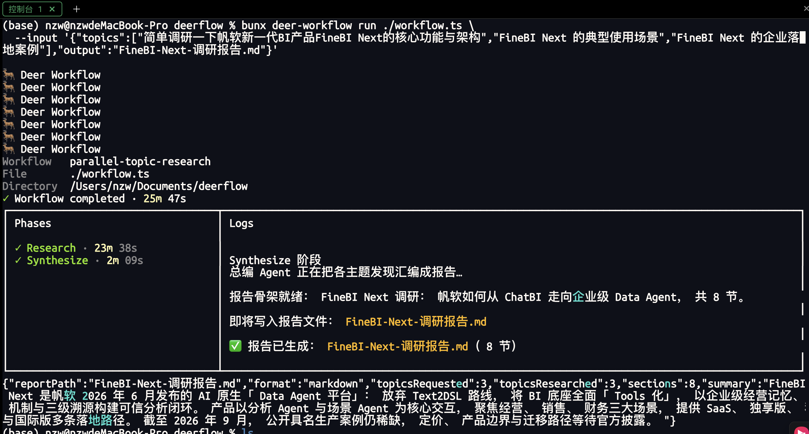

Dynamic Workflow 概述
程序的稳定性和 Agent 的主观能动性，如何结合
从静态工作流，到模型临时生成动态编排
Dynamic Workflow 是怎么来的？
Dify / Coze / N8N
可视化工作流：把 Prompt、知识库、流程拖进画布，用连线决定顺序。确定性高，但前提是开发者提前知道任务会怎么走。
- 预先设计通用流程
- 适合客服分流、表单处理
- 开放任务分支无法穷举
Skill 驱动
领域知识写进 SKILL.md，Agent 按需加载。门槛低、可自我进化，但固定步骤仍要反复经过模型逐轮判断。
- 上下文驱动、渐进加载
- 机械流程写在自然语言里
- 改进只能调 Prompt，难验证
模型临时写 Harness
模型针对当前任务临时生成 JavaScript 编排：判断留给 Agent，循环、并发、聚合、停止条件交还给代码。
- 为这次任务生成专用编排
- 机械控制流用 JS 承载
- 可测试、可迭代
合同审核：一个 Dynamic Workflow 案例
export const meta = { name: 'review-contract', description: '检查合同中的关键条款并汇总风险', phases: [ { title: 'Quick Search' }, { title: 'Plan' }, { title: 'Research' }, { title: 'Draft' }, { title: 'Review' }, { title: 'Finalize' }, ] } const target = args?.file // 唯一与 AI 有关的 API：启动一个 ReAct Loop const { clauses } = await agent(`读取 ${target}，列出关键条款。`, { schema: { type: 'object', required: ['clauses'], properties: { clauses: { type: 'array', items: { type: 'string' } }, }, }, }) // 每条条款独立流过判断 stage，无需等待其他条款 const reviews = await pipeline(clauses, clause => agent(`判断这项条款的风险：${clause}`) ) return reviews
meta 静态声明
类似 Skill 的 name + description出现在上下文中，Runtime 在执行前读取，生成名称、说明和进度分组。变量引用、函数调用不适合放进 meta。
agent() 是 ReAct Loop
不是一次 Prompt 调用，而是启动拥有独立 Context 和工具能力的 Sub-Agent，可读写文件、运行命令，返回最终结果。
pipeline 逐项前进
每条条款完成后都会进入风险判断，不必等全部条款提取完毕。机械调度由 JS 保证，语义判断留给 Agent。
分工之后，调度如何发生？
JavaScript 接管了机械控制流，agent() 接管了语义判断。但真实任务往往同时包含多个子任务——它们之间，谁先谁后、谁等谁？
任务拆解
一份合同要拆成主体、金额、期限、违约责任、争议解决五类条款，每类条款是一个独立 item。
判断边界
「是否遍历全部条款」由 JS 保证；「条款是否有风险」由 Agent 判断。分工是调度的前提。
并发调度
五类条款可以同时提取，但汇总风险前必须等齐；每条条款的风险判断却可以独立推进。
结果聚合
JavaScript 去重、排序、合并结构化结果，最终输出一份风险报告供人审阅。
Parallel 与 Pipeline：Barrier（屏障）在哪里？
并发执行一组任务，等待全部结束后返回等长数组。单项失败记为 null，天然形成 Barrier（屏障）。
让每个 item 独立流过多个 stage，stage 之间没有全局 Barrier。某个 item 不必等其他 item 完成当前 stage。
机械工作与判断工作的边界
| 工作 | 更适合谁 | 原因 |
|---|---|---|
| 控制并发、限制数量、排序、去重、检查字段完整性 | JavaScript | 规则明确，同样输入应得到同样结果 |
| 设计研究问题、评价来源质量 | agent() | 需要结合主题理解上下文 |
| 检查 URL、日期格式、引用是否缺失 | JavaScript | 可以直接验证，不必消耗 Agent Turn |
| 判断两份材料是真的矛盾，还是统计口径不同 | agent() | 需要语义判断与证据权衡 |
| 合并结构化结果、生成引用索引 | JavaScript | 适合数组和对象处理 |
| 决定文章主线、保留不确定性、统一语气 | agent() | 属于编辑判断 |
能写成稳定规则的交给 JavaScript，需要理解语义和权衡证据的交给 agent()。Workflow 编排的是研究中可机械化的部分，语义判断仍留在 Agent Loop 中。
用 Skill 构建 Dynamic Workflow
安装 CLI
bun install --global @deerwork-ai/deer-workflow，同时安装默认 Agent Runtime 使用的 Codex CLI。
用 create 命令生成
deer-workflow create "并行研究多个独立角度..." > workflow.ts。本质是调用内置 Workflow Creator Skill。
安装 Skill 到其他 Agent
deer-workflow skill install 会把 workflow-creator 复制到 ~/.agents/skills 或 ~/.claude/skills。
运行 Workflow
TUI 界面：deer-workflow run ./workflow.ts --input '{"question":"..."}'；无人值守加 --print 输出 JSONL。
Workflow 内部结构
用 deer-workflow 做一次主题 Deep Research
运行 Workflow
TUI 实时进度
进度展示：左侧面板显示 Research / Synthesize 两个阶段耗时，右侧日志流实时输出总编 Agent 的汇编进度
生成研究报告
Markdown 输出输出成果：3 个研究主题并行调研后，总编 Agent 汇编成 8 节结构化报告